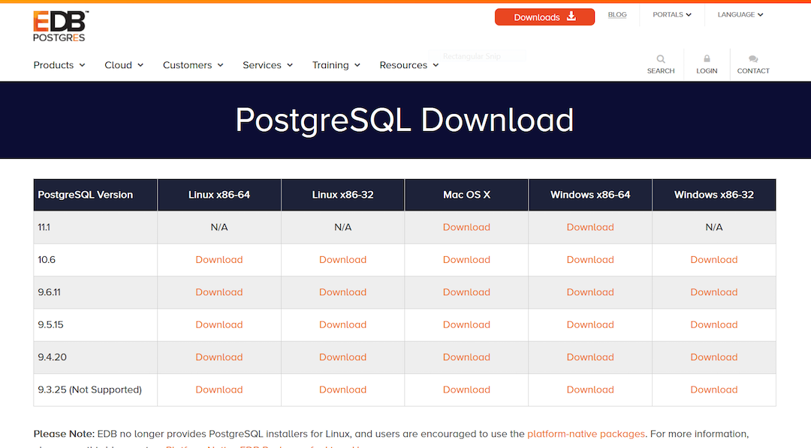

安装 postgresql 数据库
Table of Contents
1 windows 下载并安装
首先去官网上下载所需的安装文件 download。

我下载的是 postgresql-9.6.11-1-windows-x64.exe ，双击点开是直接报错安装不了，出现如下提示：
通过网络资料查找得知，可以通过跳过本地 C++ 运行库来解决这个错误。具体安装使用如下命令行。
postgresql-9.6.11-1-windows-x64.exe --install_runtimes 0
2 mac 下配置 postgres
2.1 使用 Homebrow 安装
这里安装 9.6 版本的 postgres
brew install postgresql@9.6
初始化
initdb /usr/local/var/postgresql@9.6
2.2 初始创建数据库和账户
createdb
2.3 登录数据库
psql
登录成功提示
> psql psql (9.6.13) Type "help" for help. hujinghui=#
3 数据库创建及配置
3.1 创建用户及数据库
-- 用户名及密码 CREATE USER pguser WITH PASSWORD 'pg$PassWord'; CREATE DATABASE pgdb OWNER pguser; -- 添加权限 GRANT ALL PRIVILEGES ON DATABASE pgdb TO pguser; ALTER ROLE pguser CREATEDB;
3.2 登录数据库
psql -U pguser -d pgdb
3.3 常见控制台命令
\password：设置当前登录用户的密码 \h：查看 SQL 命令的解释，比如\h select。 \?：查看 psql 命令列表。 \l：列出所有数据库。 \c [database_name]：连接其他数据库。 \d：列出当前数据库的所有表格。 \d [table_name]：列出某一张表格的结构。 \du：列出所有用户。 \e：打开文本编辑器。 \conninfo：列出当前数据库和连接的信息。 \password [user]: 修改用户密码 \q：退出
4 远程连接数据库配置
postgres 默认只能通过 localhost 连接，如果需要建立远程连接则需要进行配置。找到
postgres 配置文件所在目录，homebrew 安装后默认配置文件位于
/usr/local/var/postgresql@9.6
4.1 修改 postgresql.conf
编辑或添加下面一行，使 postgresql 可以接受来自任意 IP 的连接请求。
listen_addresses = '*'
4.2 修改 pg_hba.conf
配置服务端允许的认证方式
# TYPE DATABASE USER CIDR-ADDRESS METHOD host all all 0.0.0.0/0 md5
修改过后需要重启才能生效
5 ubuntu 下配置 postgres
5.1 进入管理命令行
Ubuntu 默认安装的 postgres 可以通过下面命令进入数据库
sudo -u postgres psql
直接使用 sql 了修改 postgres 默认用户的密码。
ALTER USER postgres WITH PASSWORD 'postgres';
6 "How-to"s
6.1 常用操作
6.1.1 查看所有用户列表
SELECT rolname FROM pg_roles;
6.1.2 查看当前用户
SELECT current_user;
6.1.3 查看当前用户权限
\du
6.1.4 查看所有数据库列表
\l
6.1.5 查看当前数据库
SELECT current_database();
6.1.6 查看当前数据库的所有表
\dt
6.1.7 查看函数列表
\df <schema>
6.2 数据库
6.2.1 连接数据库
\c <database_name>
6.2.2 创建数据库
CREATE DATABASE <database_name> WITH OWNER <username>;
6.2.3 删除数据库
DROP DATABASE IF EXISTS <database_name>;
6.2.4 重命名数据库
ALTER DATABASE <old_name> RENAME TO <new_name>;
6.3 用户
6.3.1 查看所有用户
SELECT rolname FROM pg_roles;
6.3.2 创建用户
CREATE USER <user_name> WITH PASSWORD '<password>';
6.3.3 删除用户
DROP USER IF EXISTS <user_name>;
6.3.4 修改用户密码
ALTER ROLE <user_name> WITH PASSWORD '<password>';
6.4 表
6.4.1 查看所有表
\dt
6.4.2 查看全局的表
\dt *.*
6.4.3 创建表
CREATE TABLE <table_name> ( <column_name> <column_type>, <column_name> <column_type>, <column_name> <column_type> );
例子
CREATE TABLE users ( id INT PRIMARY KEY NOT NULL, name VARCHAR(50) NOT NULL, birthday DATE ); ALTER TABLE users OWNER TO pguser; COMMENT ON TABLE users IS '用户表';
postgres 教程中的例子
CREATE DATABASE mydb; CREATE TABLE weather ( city VARCHAR(80), temp_lo INT, -- low temperature temp_hi INT, -- high temperature prcp REAL, -- precipitation date DATE ); CREATE TABLE cities ( name VARCHAR(80), location POINT ); INSERT INTO weather VALUES ('San Francisco', 46, 50, 0.25, '1994-11-27'); INSERT INTO weather (city, temp_lo, temp_hi, prcp, date) VALUES ('San Francisco', 43, 57, 0.0, '1994-11-29'); INSERT INTO weather (date, city, temp_hi, temp_lo) VALUES ('1994-11-29', 'Hayward', 54, 37); INSERT INTO cities VALUES ('San Francisco', '(-194.0, 53.0)');
6.4.4 删除表
DROP TABLE IF EXISTS <table_name> CASCADE;
6.5 脚本
6.5.1 备份数据库
pg_dump <database_name>
6.5.2 还原数据库
pg_restore -d <database_name> -a <file_pathway>
6.5.3 导出 csv 文件
\copy <table_name> TO '<file_path>' CSV;
6.5.4 导入 csv 文件
\copy <table_name> FROM '<file_path>' CSV;